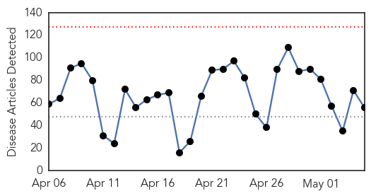
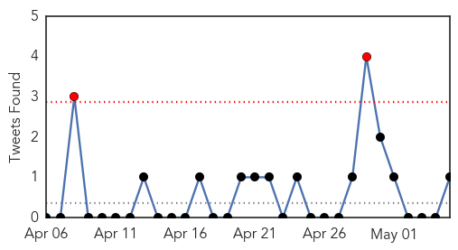
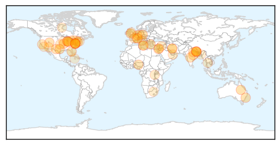
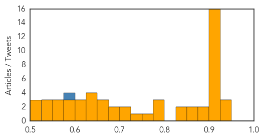
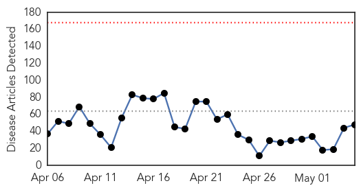
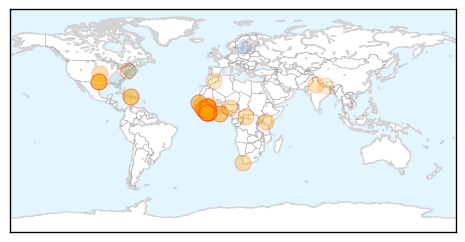
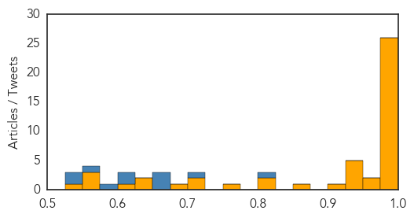

Unknown
30-Day Web Trend
0 alerts, 0 warnings

30-Day Twitter Trend
2 alerts, 0 warnings

Article Locations
Article Confidences
Top Articles:
- 0.941
- Midwest dog flu has some kennels asking for vaccinations
- 0.940
- Kitsap sees rise in gonorrhea rate
- 0.925
- WHO issues health assessment on impact of Nepal earthquake
- 0.917
- Chicago Tribune
- 0.917
- Chicago Tribune
- 0.917
- Chicago Tribune
- 0.917
- Chicago Tribune
- 0.917
- Chicago Tribune
- 0.917
- Chicago Tribune
- 0.917
- Chicago Tribune
- 0.917
- Chicago Tribune
- 0.917
- Chicago Tribune
- 0.917
- Chicago Tribune
- 0.917
- Chicago Tribune
- 0.917
- Chicago Tribune
- 0.917
- Chicago Tribune
- 0.917
- Chicago Tribune
- 0.917
- Chicago Tribune
- 0.917
- Chicago Tribune
- 0.888
- 41 Sickened and 7 Hospitalized with E. coli After Attending Milk Makers Fest
- 0.881
- Surge in flu cases in NSW prompts cruise ship warning
- 0.866
- An uptick in Lyme disease in Utah?
- 0.861
- Chlamydia Outbreak Has Set Off In West Texas High School
- 0.847
- Food poisoning cases soar with rising mercury in Bhopal
- 0.830
- The alarm over unsafe food
- 0.798
- S/J sees sharp decline in incidence of malaria
- 0.783
- Nepal: MSF starts reaching people in remote mountain regions by helicopter and on foot following the earthquake
- 0.775
- No malaria bearing mosquitoes identified in Malta and risk of infection is only through travel
- 0.758
- Nepal's quake death toll reaches 7,365, as reconstruction under plan
- 0.749
- Panic at US school after student is diagnosed with tuberculosis
- 0.720
- Nepal quake takes toll on orthopedic, psychological cases
- 0.707
- All known malaria cases imported
- 0.695
- Israeli veterans slam Gaza war tactics, indiscriminate fire
- 0.680
- Belle River mom in critical condition with flesh-eating disease
- 0.659
- Lawmakers set to back spy bill dubbed ‘French Patriot Act’
- 0.651
- Islamic State group claims Texas attack, first in US
- 0.651
- 'Religious profiling' of Muslim children in French town causes outcry
- 0.635
- NYPD officer dies from gunshot wound amid ‘historic’ anti-police sentiment
- 0.635
- France, Saudi Arabia jointly warn of Iran deal 'destabilisation'
- 0.635
- Burundi court upholds president’s controversial third-term bid
- 0.635
- WHO/UNHCR issue new guide on mental health in humanitarian emergencies
- 0.609
- Far right figurehead Le Pen slams ‘backstabbing’ daughter
- 0.608
- Steps being taken to avoid bird flu in RI
- 0.602
- Ministry of Public Health to send another medical team to Nepal
- 0.593
- Lyme Disease, Tick Bites, And Tips For Severe Pain Relief - Hometown Station
- 0.583
- Dry Spring Minimises PEDv Spread
- 0.577
- For French press, UK elections all about EU referendum
- 0.574
- Italy passes electoral overhaul to end chronic instability
- 0.571
- The Globalisation of Public Health: Ensuring Healthcare access for all
- 0.552
- Healthcare : We need specialists for patients dealing with physical, mental trauma
Showing top 50 articles...
Top Tweets:
- 0.579
- RT: Hoy en discutimos reporte del CDC sobre la salud de los Hispanos
- 0.526
- RT: ¿FAST FOOD DE MAYAGÜEZ LOGRA QUE CIERREN UN NEGOCIO BORICUA? - Bueno, eso alegan en este interesate reportaje... http://t…
- 0.526
- Flu season varies by location - before you travel research the current flu situation at your destination. http://t.co/zFsb7pZS2T
Ebola
30-Day Web Trend
0 alerts, 0 warnings

30-Day Twitter Trend
0 alerts, 0 warnings

Article Locations
Article Confidences
Top Articles:
- 1.000
- Communicating in a crisis like Ebola: Facts and figures
- 0.999
- Managing rumours and misinformation in West Africa
- 0.999
- WATCH: Inside the Troubled Early Days of Guinea’s Ebola Response
- 0.999
- Tracing the Ebola Outbreak, Scientists Hunt a Silent Epidemic
- 0.999
- The fight against Ebola is more hopeful than ever, but it's not over: MSF Canada's Stephen Cornish on the ground in West Africa
- 0.998
- Report: Five months after infection, man spreads Ebola via sex
- 0.998
- Ending Ebola before rainy season imperative
- 0.998
- Ebola can be transmitted through sex for months after recovery
- 0.998
- Report: 5 months after infection, man spreads Ebola via sex
- 0.998
- Ebola outbreak was a warning for the world, says Frontline
- 0.998
- Ebola made vulnerable Liberians to fall back into poverty
- 0.997
- Ending Ebola before rainy season imperative - UNMEER
- 0.997
- As Ebola approaches zero, immunisation gets a boost in West Africa
- 0.996
- Liberia poised to be declared Ebola-free
- 0.996
- Orlando Bloom: Ebola still a real threat
- 0.995
- Ebola end in sight as weekly infections drop to single figures
- 0.994
- Scholarship Named to Honor Ebola Victim Thomas Eric Duncan
- 0.986
- Nigeria not prepared for another Ebola outbreak
- 0.986
- CDC Downgrades Travel Guidance To Liberia Over Ebola Outbreak
- 0.986
- Sahel Annual Report 2014 (MAA61004) - Mali
- 0.985
- A paradigm shift in outbreak response
- 0.985
- Ebola end in sight as weekly infections drop to single figures
- 0.985
- Westporter Leads UN Program to End Ebola Crisis
- 0.984
- Y's Men hear about coping with the Ebola crisis
- 0.983
- Monrovia Medical Unit decommissioned
- 0.978
- President Clinton and Chelsea Clinton in Monrovia, Liberia Monday, May 4, 2015
- 0.970
- Texas Health Resources Announces Medical Scholarship Fund in Liberia
- 0.966
- Christian Council: Pastors must not frustrate work of doctors
- 0.948
- Bioterrorism, public health, superbug, biolabs, epidemics, biosurveillance, outbreaks, DNA sequencing
- 0.942
- Christian Council expresses worry about Pastors interference with Doctors
- 0.938
- Texas Health, Ebola victim's family launch fund to train health workers in Liberia
- 0.937
- Dr. Tim Evans: Accountability Crucial to World Bank Support
- 0.930
- Bill Clinton Celebrates Liberia’s Return to ‘Normal Life’
- 0.914
- US ex-president Clinton praises Liberia progress on Ebola
- 0.874
- New German strategy as Ebola cases fall
- 0.823
- Kenya : Nurse: I signed will before flying to Ebola-hit Liberia
- 0.820
- Track mechanism to check authenticity of medicines: Nadda
- 0.765
- Tracing crisis' roots and how it spread
- 0.718
- Ebola survivors hail Social Aid Volunteers « Awoko Newspaper
- 0.703
- Clinton Pledges Support to Health Sector Recovery, Post Ebola
- 0.696
- Security Council hears Liberia briefing as country anticipates being declared ‘Ebola-free’
- 0.645
- Political violence in Sierra Leone – Amnesty holds Koroma government accountable
- 0.627
- Nepal’s health system at breaking point – doctors
- 0.604
- Sierra Leone: Ebola regulations and other laws must not be used to curtail freedom of expression and assembly
- 0.572
- UNICEF Makes Post-Ebola Donation
- 0.564
- Water and sanitation in health centres in Mali – podcast transcript
- 0.558
- Sierra Leone and donors set out $8m social safety net plan
- 0.538
- Confirmation Plea: Liberia Senate Urged to Confirm Werner, Dahn
Top Tweets:
- 0.934
- The political economy of Ebola Virus Disease (EVD) in West African countries http://t.co/X4VBwumPpe
- 0.928
- Tracing the Ebola Outbreak, Scientists Hunt a Silent Epidemic via http://t.co/DQzNdHKSU5 infectious disease
- 0.916
- Ending Ebola before rainy season imperative - UNMEER - GhanaWeb http://t.co/ffLy7SlMNq ebola EVD
- 0.910
- Read latest public health development: Possible sexual transmission of Ebola http://t.co/Xjg2VhPfLL
- 0.892
- Monthly Overview on the Ebola Outbreak in West Africa for April 2015 http://t.co/PirIIu0RHo
- 0.851
- Ebola crisis revealed "major fault lines" - CMAJ http://t.co/nJaikn5k9F ebola EVD
- 0.824
- CDC’s Sierra Leone Ebola response team reminds health workers that clean care is safer care. safeHANDS http://t.co/qpLAQztF09
- 0.821
- Inside the troubled early days of the Ebola response - PRI http://t.co/fTosFjPjTT ebola EVD
- 0.810
- Rep. Kevin Brady tours Woodlands Ebola treatment facility - Your Houston News http://t.co/gq1RFoO2tl ebola EVD
- 0.775
- WATCH: Inside the Troubled Early Days of Guinea's Ebola Response - FRONTLINE http://t.co/UkT4sFGOml ebola EVD
- 0.672
- Fort Detrick researchers present results of Ebola research - Frederick News Post (subscription) http://t.co/YnUFpqpLer ebola EVD
- 0.652
- RT: Ebola in Liberia travel notice has been downgraded; we’re monitoring the situation, will update info & advice for traveler…
- 0.620
- 5 May news pouch on avianflu avianinfluenza Ebola EbolaResponse MERS Nepal NepalQuakeRelief is here: http://t.co/Q3Vktz9CdF
- 0.589
- Ebola Virus Entry: A Curious and Complex Series of Events http://t.co/u1WCirnXHb
- 0.584
- Kick Ebola from Liberia - how the ICRC's cashtransfers are helping https://t.co/g5cP1pZW4G
- 0.548
- RT: "They might have been able to stop the spread of Ebola," says on http://t.co/pc5vpvp1gu http://t.…
- 0.512
- RT: LES SURVIVANTS D'EBOLA EN PROIE À DES COMPLICATIONS stopebola isolonsebola EbolaResponse http://t.co/zeCFMs5k00 http:…
- 0.502
- RT: CDC has removed rec against travel to Liberia but does recommend special Ebola precautions for travelers: http://t.co/hHX…
- 0.502
- RT: CDC has removed rec against travel to Liberia but does recommend special Ebola precautions for travelers: http://t.co/hHX…